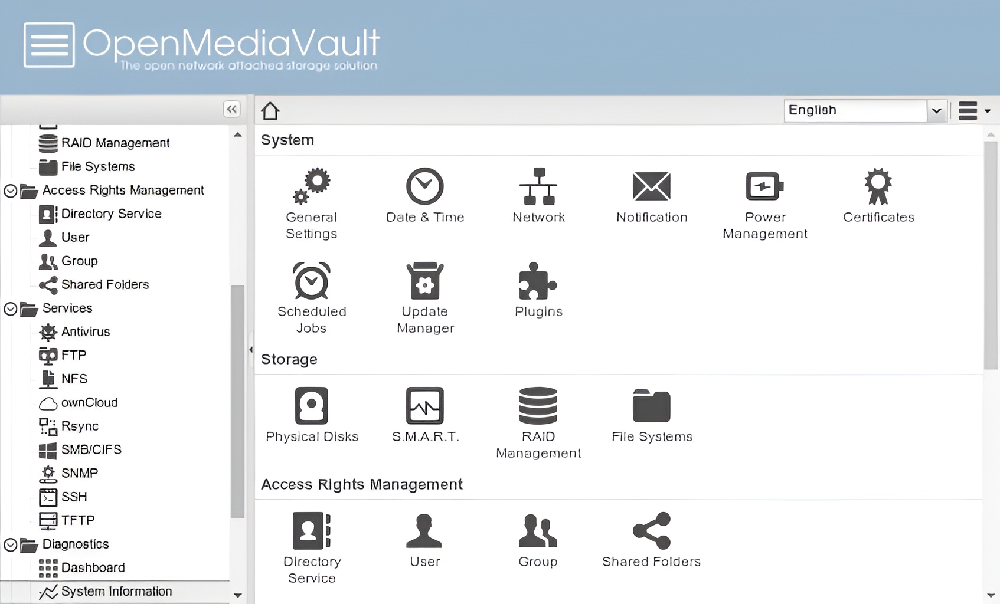

Storage & Backups
Purpose
To establish centralized, secure file storage and robust media streaming accessible across all devices connected to the local network.
Technical Implementation
- Storage Platform: 1TB Crucial High-Speed SSD
- Operating System: Raspberry Pi OS running OpenMediaVault (OMV)
- Protocols: Samba (SMB) for cross-platform devices, NFS for specialized Linux transfers
- Primary Reference: NetworkChuck's OMV tutorial
Key Features
Challenge Solved: External Power Limitations
Initially, I connected a 1TB external HDD, but the mechanical drive failed to spin up reliably due to power supply fluctuations from the Pi's USB ports. I resolved this by migrating to a 1TB Crucial solid-state drive (SSD), which significantly lowered the power draw and yielded faster read/write speeds for network file transfers.
